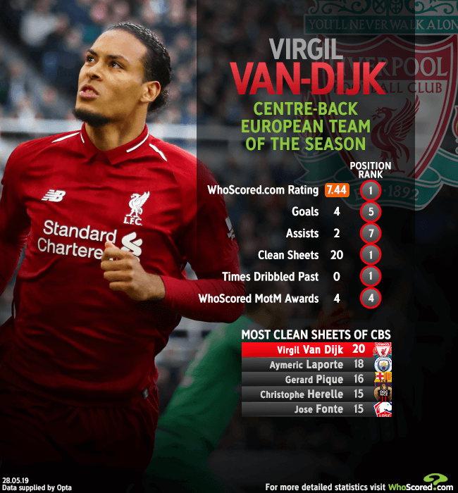

Thông tin cơ bản
Virgil van Dijk là một cầu thủ bóng đá chuyên nghiệp người Hà Lan chơi ở vị trí hậu vệ cho Liverpool và là đội trưởng đội tuyển bóng đá quốc gia Hà Lan. Anh được biết đến với sức mạnh, khả năng lãnh đạo và khả năng không chiến.
Ngày/nơi sinh: 8 tháng 7, 1991 (29 tuổi), Breda, Hà Lan
Chiều cao: 1,93 m
Cân nặng: 92 kg
Vợ: Rike Nooitgedagt
Đội hiện tại: Câu lạc bộ Bóng đá Liverpool (#4 / Hậu vệ), Đội tuyển bóng đá quốc gia Hà Lan (Hậu vệ)
Sự nghiệp cầu thủ
Sau khi bắt đầu sự nghiệp của mình với Groningen, anh chuyển đến Celtic vào năm 2013, nơi anh giành chức vô địch Ngoại hạng Scotland và được đặt tên trong đội hình tiêu biểu trong cả hai mùa của anh ấy và cũng giành chiến thắng tại Cúp bóng đá Liên đoàn Scotland sau đó. Tháng 9 năm 2015, anh gia nhập Southampton. Anh gia nhập Liverpool vào tháng 1 năm 2018 với mức phí kỷ lục cho một hậu vệ và ngay lập tức đưa CLB vào chung kết UEFA Champions League mùa giải năm đó nhưng thất bại trong trước Real Madrid, ngoài ra Van Dijk được bầu chọn là Cầu thủ xuất sắc nhất năm của PFA và Cầu thủ Ngoại hạng Anh xuất sắc nhất mùa giải 2018-19. Van Dijk thêm một lần cùng Liverpool lọt vào trận chung kết UEFA Champions League mùa 2018-2019 và đã trở thành nhà vô địch; đồng thời cùng Liverpool giành Á quân Ngoại hạng Anh với số điểm cao nhất trong lịch sử giải đấu.
Van Dijk có trận ra mắt cho đội tuyển Hà Lan vào năm 2015 và trở thành đội trưởng vào năm 2018. Năm 2019, anh đã ghi bàn thắng đầu tiên cho tuyển trong chiến thắng 3-0 trước nhà vô địch châu Âu Bồ Đào Nha và ba tháng sau, anh cùng đội tuyển lọt vào trận chung kết UEFA Nations League 2019 nhưng để thua Bồ Đào Nha. Ngày 2 tháng 12 năm 2019, anh về nhì trong cuộc đua giành Quả Bóng Vàng, xếp sau Lionel Messi với số phiếu bầu sít sao.